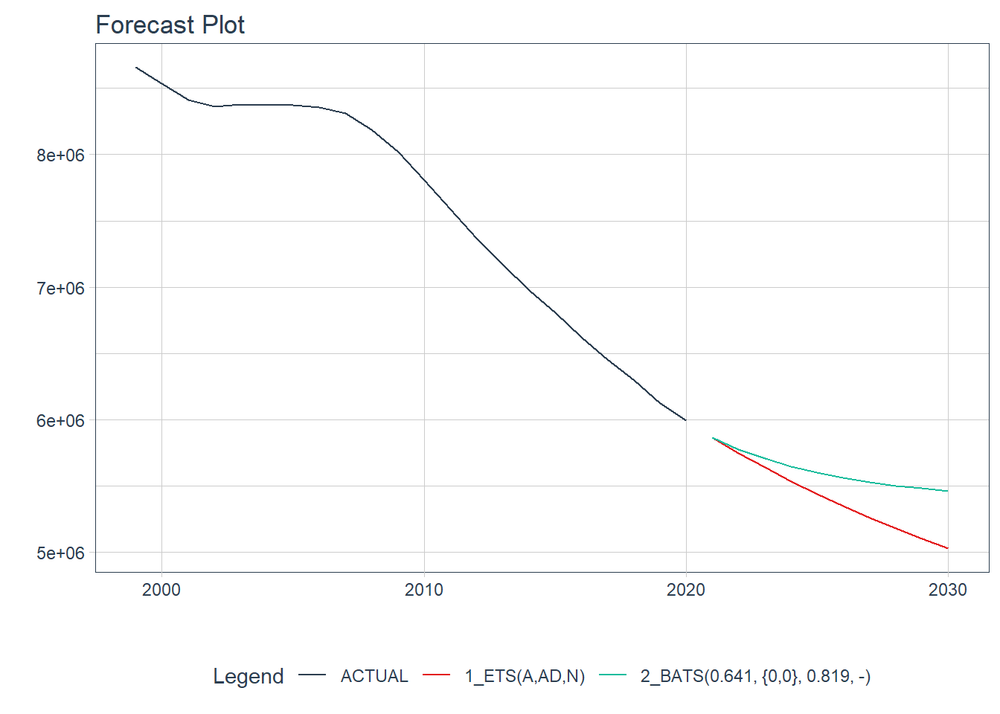
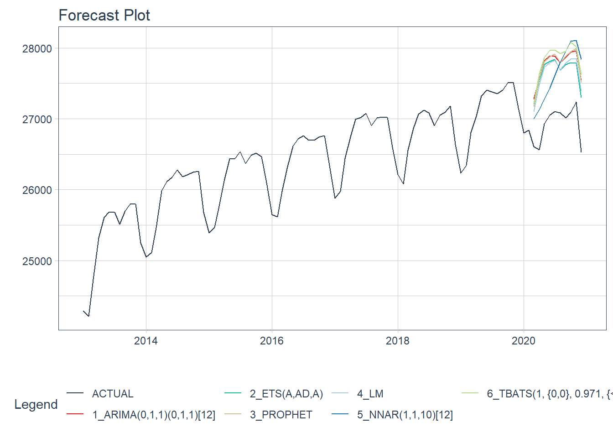
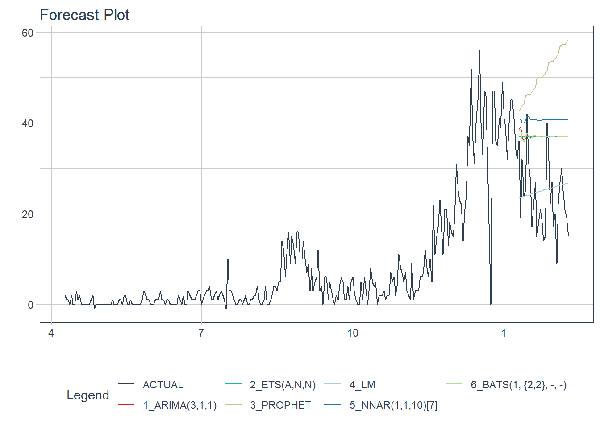

7.3 modeltime framework
modeltime은 머신러닝에서 주로 사용하는 모델, 전통적인 시계열 모델을 자동화한 통합 모델을 사용해서 시계열 모델을 빠르게 개발하고 테스트하기 위해 설계된 새로운 프레임워크이다.
modeltime 프레임워크는 미국의 Business Science에서 개발한 시계열 전용 분석 프레임워크로 tidymodel 생태계를 기본으로 제작되었다. tidymodel 프레임워크를 활용하기 때문에 tidymodel에서 포함하고 있는 tidymodel, parship, rsample 등의 패키지를 사용한다.
modeltime은 다음같은 장점이 있다.5
시계열 예측을 위한 시스템화된 워크플로우를 제공한다.
modeltime에서 제공하는modeltime_table(),modeltime_calibrate(),modeltime_refit()등의 함수들을 차례대로 실행하면 예측 모델을 쉽게 구현할 수 있다.시계열 모델에서 예측을 위해 활용되지 못했던 머신러닝 모델을 사용하기 위해
Tidymodel을 확장합니다.tidymodel에 포함된parship모델에서 제공하는boost_tree ()(XGBoost, C5.0),linear_reg()(GLMnet, Stan, Linear Regression),rand_forest()(Random Forest) 등을 사용할 수 있다.XGBoost모델을 오류에 적용하여 정확도를 향상시킬 수있는 Boosted ARIMA (arima_boost ()) 및 Boosted Prophet (prophet_boost())을 포함한 새로운 시계열 부스트 모델을 제공한다.
modeltime을 사용하여 예측모델과 예측결과를 만드는 것은 아래의 그림과 같은 modeltime 워크플로우를 따라가면서 만들수 있다.

modeltime의 워크플로우를 정리하면 다음과 같다.
분석할 시계열 데이터를 트레이닝 셋과 테스트 셋으로 분리한다.
생성하고자 하는 모델을 생성한다. 이 부분은 tidymodel의 예측모델 생성방식을 사용하는데 parsnip 패키지에서 제공하는 함수들을 재활용한다. 모델을 생성하기 위해서는 다음의 3단계를 거친다.
- 예측모형을 설정한다. 생성하기를 원하는 예측모형을 생성하는 함수를 호출하여 설정하는데 시계열 모델에 해당하는 예측모형 설정함수는 다음과 같다.
set_engine()을 사용하여설정된 예측모형을 생성하기 위해 사용할 엔진을 설정한다. 일반적인 머신러닝 모형의 경우 모형을 생성하기 위한 엔진이 여러개 있는 경우들이 있는데 이런 경우에 적합하다.6 하지만 시계열 모델에는 엔진이 많지 않아 적합치는 않지만 tidymodel의 호환성을 위해 사용하는 것으로 보인다.fit()을 사용하여 생성한 모델에 트레이닝 데이터를 피팅한다.
| 모델명 | 함수명 |
|---|---|
| 선형회귀 | linear_reg() |
| prophet | prophet_reg() |
| boosted prophet | prophet_boost() |
| arima | arima_reg() |
| boosted arima | arima_boost() |
| 지수평활 | exp_smoothing() |
| 계절성 회귀(tbats, stlm) | seasonal_reg() |
| 신경망 | nnetar_reg() |
- 생성된 여러 모델을 model table에 저장한다.
modeltime에서는 모델을 생성하여 model table에 저장하는 모델을 생성하는 함수로modeltime_table()를 제공한다. modeltime_calibrate()에 테스트 셋을 사용하여 model table의 모델들을 조정(calibration)한다.modeltime_forecast()와modeltime_accuracy()를 사용하여 미래 예측치를 산출하고 미래 예측치에 대한 정확성을 측정한다.- 정확성 측정에 의해 선정된 모델에 대해
modeltime_refit()에 전체 데이터셋을 사용해 모델을 다시 피팅하고 예측치를 산출한다.
7.3.1 미래 학생수 예측
앞에서 설명한 방법을 사용하여 미래 학생수를 예측해 보자.
앞에서 설명한 것과 같이 modeltime프레임워크는 tidymodels생태계를 확장했기 때문에 tidymodels패키지와 modeltime 패키지가 필요하다.
library(modeltime)
library(tidymodels)이제 분석할 데이터를 트레이닝 셋과 테스트 셋으로 분리한다. 앞의 fable에서는 열번호를 사용하여 나누었지만 modeltime에서는 tidymodels 생태계의 rsample패키지에서 제공하는 initial_time_split()을 사용한다.
splits.students <- initial_time_split(students, prop = 0.8)이제 트레이닝 셋을 사용하여 몇가지 모델을 생성해본다. 먼저 arima 모델은 다음과 같이 생성할 수 있다. 아래의 예제에서도 보면 모델 생성 엔진을 ’auto-arima’로 설정했기 때문에 arima 모델의 p, d q 차수를 자동으로 결정해준다.
model_fit_arima <- arima_reg() %>%
set_engine(engine = "auto_arima") %>%
fit(학생수계 ~ 연도, data = training(splits.students))코드설명
- arima 모델을 생성할 것이라는 것을
arima_reg()를 통해 선언 set_engine()을 사용하여 arima 모델을 만드는 엔진으로 ’auto-arima’를 설정fit()을 사용하여 예측을 원하는 변수(종속변수)와 예측에 사용할 시간 변수(독립변수)를 ~기호를 사용한 식(foumula)으로 전달하고 사용할 데이터로 트레이닝 셋(trainint(split.student)을 전달)- 만약
%>%을 사용하고 싶지 않다면fit(set_engine(arima_reg(), engine = 'auto_arima'), 학생수계 ~ 연월일, data = training(splits.students))
- arima 모델을 생성할 것이라는 것을
다음으로 지수평활 모델을 만든다. 지수평활 모델도 상태공간 모델의 선택을 엔진에서 자동적으로 선택해준다.
model_fit_ets <- exp_smoothing() %>%
set_engine(engine = "ets") %>%
fit(학생수계 ~ 연도, data = training(splits.students))코드설명
- 지수평활 모델을 생성할 것이라는 것을
exp_smoothing()를 통해 선언 set_engine()을 사용하여 모델을 만드는 엔진으로 ’ets’를 설정fit()을 사용하여 예측을 원하는 변수(종속변수)와 예측에 사용할 시간 변수(독립변수)를 ~기호를 사용한 식(foumula)으로 전달하고 사용할 데이터로 트레이닝 셋(trainint(split.student)을 전달)
- 지수평활 모델을 생성할 것이라는 것을
다음으로 prophet 모델을 생성한다.
model_fit_prophet <- prophet_reg() %>%
set_engine(engine = "prophet") %>%
fit(학생수계 ~ 연도, data = training(splits.students))코드설명
- prophet 모델을 생성할 것이라는 것을
prophet_reg()를 통해 선언 set_engine()을 사용하여 모델을 만드는 엔진으로 ‘prophet’ 설정fit()을 사용하여 예측을 원하는 변수(종속변수)와 예측에 사용할 시간 변수(독립변수)를 ~기호를 사용한 식(foumula)으로 전달하고 사용할 데이터로 트레이닝 셋(trainint(split.student)을 전달)
- prophet 모델을 생성할 것이라는 것을
다음으로 선형회귀 모델을 생성한다.
model_fit_lm <- linear_reg() %>%
set_engine("lm") %>%
fit(학생수계 ~ 연도,
data = training(splits.students))코드설명
- 선형회귀 모델을 생성할 것이라는 것을
linear_reg()를 통해 선언 set_engine()을 사용하여 모델을 만드는 엔진으로 ‘lm’ 설정fit()을 사용하여 예측을 원하는 변수(종속변수)와 예측에 사용할 시간 변수(독립변수)를 ~기호를 사용한 식(foumula)으로 전달하고 사용할 데이터로 트레이닝 셋(trainint(split.student)을 전달)
- 선형회귀 모델을 생성할 것이라는 것을
다음으로 신경망 모델을 생성한다.
model_fit_nnetar <- nnetar_reg() %>%
set_engine("nnetar") %>%
fit(학생수계 ~ 연도, data = training(splits.students))코드설명
- 신경망 모델을 생성할 것이라는 것을
nnetar_reg()를 통해 선언 set_engine()을 사용하여 모델을 만드는 엔진으로 ‘nnetar’ 설정fit()을 사용하여 예측을 원하는 변수(종속변수)와 예측에 사용할 시간 변수(독립변수)를 ~기호를 사용한 식(foumula)으로 전달하고 사용할 데이터로 트레이닝 셋(trainint(split.student)을 전달)
- 신경망 모델을 생성할 것이라는 것을
다음은 계절성 회귀모델인 TBATS 모델을 생성한다.
model_fit_tbats <- seasonal_reg() %>%
set_engine("tbats") %>%
fit(학생수계 ~ 연도, data = training(splits.students))코드설명
- 신경망 모델을 생성할 것이라는 것을
seasonal_reg()를 통해 선언 set_engine()을 사용하여 모델을 만드는 엔진으로 ‘tbats’ 설정fit()을 사용하여 예측을 원하는 변수(종속변수)와 예측에 사용할 시간 변수(독립변수)를 ~기호를 사용한 식(foumula)으로 전달하고 사용할 데이터로 트레이닝 셋(trainint(split.student)을 전달)
- 신경망 모델을 생성할 것이라는 것을
모델 생성이 완료되면 model table을 생성한다. model table은 modeltime_table()을 사용해서 만들수 있다.
(models_tbl <- modeltime_table(
model_fit_arima,
model_fit_ets,
model_fit_prophet,
model_fit_lm,
model_fit_nnetar,
model_fit_tbats))# Modeltime Table
# A tibble: 6 x 3
.model_id .model .model_desc
<int> <list> <chr>
1 1 <fit[+]> ARIMA(1,2,0)
2 2 <fit[+]> ETS(A,A,N)
3 3 <fit[+]> PROPHET
4 4 <fit[+]> LM
5 5 <fit[+]> NNAR(1,1,10)[5]
6 6 <fit[+]> BATS(0.732, {0,0}, 1, -)코드설명
- modeltime_table()을 사용하여 model table을 생성
- modeltime_table()의 매개변수로 미리 만들어놓은 모델을 넣어줌
- model table은 models_tbl에 저장
생성된 model table에 저장된 모델들에 대한 조정을 실시한다. modeltime_calibrate()을 사용하며 조정하기 위해 사용하는 데이터는 테스트 셋을 사용한다.
(calibration_tbl <- models_tbl %>%
modeltime_calibrate(new_data = testing(splits.students)))# Modeltime Table
# A tibble: 6 x 5
.model_id .model .model_desc .type .calibration_data
<int> <list> <chr> <chr> <list>
1 1 <fit[+]> ARIMA(1,2,0) Test <tibble [5 x 4]>
2 2 <fit[+]> ETS(A,A,N) Test <tibble [5 x 4]>
3 3 <fit[+]> PROPHET Test <tibble [5 x 4]>
4 4 <fit[+]> LM Test <tibble [5 x 4]>
5 5 <fit[+]> NNAR(1,1,10)[5] Test <tibble [5 x 4]>
6 6 <fit[+]> BATS(0.732, {0,0}, 1, -) Test <tibble [5 x 4]> 코드설명
%>%을 이용하여modeltime_calibrate()에 model table인 models_tbs을 전달- 조정할 데이터는 테스트 셋을 설정(
new_data = testing(splits.students)) - 조정된 모델들은 calibration_tbl에 저장
테스트 셋을 사용하여 세부 조정된 모델 테이블과 modeltime_forecast()을 사용하여 미래 예측값을 산출한다. modeltime_forecast() 결과를 plot_modeltime_forecast()를 사용하여 plot 생성한다. 아래의 코드에서 예측에 사용되는 새로운 데이터를 테스트셋으로 설정한 이유는 실제 테스트 데이터 셋의 값과 모델의 예측을 통해 생성되는 값들을 비교해보기 위해 설정하였다.
calibration_tbl %>%
modeltime_forecast(
new_data = testing(splits.students),
actual_data = students
) %>%
plot_modeltime_forecast(
.interactive = FALSE,
.conf_interval_show = FALSE
)
코드설명
%>%을 이용하여modeltime_forecast()에 조정된 모델 테이블인 calibration_tbs을 전달- model_forecast()는 예측을 위해 사용할 새로운 데이터 셋으로 테스트 데이터셋을 설정하였고(
new_data = testing(splits.students)) 원본데이터와 같이 보기 위해 원본데이터를 설정(actual_data = students) modeltime_forecast()을 통해 생성된 예측값은plot_modeltime_forecast을 사용하여 plot 생성. 대화형 기능을 제거(.interactive = FALSE)하고 예측구간을 제거(.conf_interval_show = FALSE)
육안으로는 어느 모델이 더 우수한지 알아보기가 어렵다. accuracy()를 사용하여 조정된 모델들의 성능측정 지수를 비교해본다.
calibration_tbl %>%
modeltime_accuracy() %>%
arrange(rmse)# A tibble: 6 x 9
.model_id .model_desc .type mae mape mase smape rmse rsq
<int> <chr> <chr> <dbl> <dbl> <dbl> <dbl> <dbl> <dbl>
1 2 ETS(A,A,N) Test 16449. 0.263 0.105 0.263 1.75e4 0.998
2 6 BATS(0.732, {0,0}, 1, ~ Test 18767. 0.302 0.120 0.301 2.20e4 0.998
3 1 ARIMA(1,2,0) Test 79663. 1.28 0.509 1.27 8.52e4 0.998
4 3 PROPHET Test 101824. 1.65 0.650 1.67 1.15e5 0.996
5 5 NNAR(1,1,10)[5] Test 319033. 5.18 2.04 5.00 3.77e5 0.549
6 4 LM Test 500003. 7.99 3.19 7.67 5.05e5 0.998코드설명
%>%을 이용하여accuracy()에 조정된 모델 테이블인 calibration_tbs을 전달- arrange(rmse)를 이용하여 RMSE값으로 정렬하여 어느 모델이 우수한지 평가
성능측정 지수를 사용하여 우수한 모델 2개를 선택하고 이번에는 트레이닝 셋이 아닌 전체 데이터 셋을 사용하여 모델을 생성한다.
model_fit_ets <- exp_smoothing() %>%
set_engine(engine = "ets") %>%
fit(학생수계 ~ 연도, data = students)
model_fit_tbats <- seasonal_reg() %>%
set_engine("tbats") %>%
fit(학생수계 ~ 연도, data = students)
(models_tbl <- modeltime_table(
model_fit_ets,
model_fit_tbats))# Modeltime Table
# A tibble: 2 x 3
.model_id .model .model_desc
<int> <list> <chr>
1 1 <fit[+]> ETS(A,AD,N)
2 2 <fit[+]> BATS(0.641, {0,0}, 0.819, -)models_tbl %>%
modeltime_forecast(
h = '10 years',
actual_data = students
) %>%
plot_modeltime_forecast(
.interactive = FALSE
)
코드설명
- 전체 데이터 셋을 사용하여 ets 모델과 tbats모델을 생성
- 두개의 모델을 사용하여 모델 테이들을 생성
- 전체 데이터로 생성한 모델 테이블을 modeltime_forecast()에 %>%로 전달하여 예측치 산출. 단 이번에는 테스트셋이 없기 때문에 예측 기간을 지정(h = ‘10 years’)하고 원본 데이터와 같이 예측 데이터를 생성
- plot_modeltime_forecast()를 사용하여 두 모델의 10년치 예측 데이터 plot을 생성
7.3.2 미래 취업자수 예측
이번에는 전체 취업자 수를 사용하여 미래 취업자수를 예측해본다. 방법은 학생수 예측과 거의 동일하다.
먼저 트레이닝 셋과 테스트 셋을 분리한다.
splits.employees <- initial_time_split(employees, prop = 0.9)첫번째 모델은 arima모델로 auto_arima엔진을 설정하고 트레이닝 데이터 셋을 사용하여 모델을 피팅한다. 종속변수는 전체 취업자수(total)이며 독립변수는 time(시간)으로 식을 설정하였다.
model_fit_arima <- arima_reg() %>%
set_engine(engine = "auto_arima") %>%
fit(total ~ time, data = training(splits.employees))두번째 모델은 ets모델을 생성하였다.
model_fit_ets <- exp_smoothing() %>%
set_engine(engine = "ets") %>%
fit(total ~ time, data = training(splits.employees))세번째 모델은 prophet모델을 생성하였다.
model_fit_prophet <- prophet_reg() %>%
set_engine(engine = "prophet") %>%
fit(total ~ time, data = training(splits.employees))네번째 모델은 선형회귀 모델이다. 선형회귀 모델에서 하나 다른 점은 계절성을 추가하기 위해 월을 추가하였다.
model_fit_lm <- linear_reg() %>%
set_engine("lm") %>%
fit(total ~ time + factor(lubridate::month(time, label = TRUE), ordered = FALSE),
data = training(splits.employees))코드설명
- 계절성을 추가하기 위해 시간컬럼에서 월을 추출(
month(time, label = TRUE)) - 추출된 월을 factor로 설정하는데 순서는 유지하지않도록 설정(
ordered = FALSE)
- 계절성을 추가하기 위해 시간컬럼에서 월을 추출(
다섯번째 모델은 신경망 모델을 생성한다.
model_fit_nnetar <- nnetar_reg() %>%
set_engine("nnetar") %>%
fit(total ~ time, data = training(splits.employees))여섯번째 모델은 tbats모델이다.
model_fit_tbats <- seasonal_reg() %>%
set_engine("tbats") %>%
fit(total ~ time, data = training(splits.employees))위에서 생성한 여섯가지 모델을 사용하여 모델 테이블인 models_tbs을 생성한다.
(models_tbl <- modeltime_table(
model_fit_arima,
model_fit_ets,
model_fit_prophet,
model_fit_lm,
model_fit_nnetar,
model_fit_tbats))# Modeltime Table
# A tibble: 6 x 3
.model_id .model .model_desc
<int> <list> <chr>
1 1 <fit[+]> ARIMA(0,1,1)(0,1,1)[12]
2 2 <fit[+]> ETS(A,AD,A)
3 3 <fit[+]> PROPHET
4 4 <fit[+]> LM
5 5 <fit[+]> NNAR(1,1,10)[12]
6 6 <fit[+]> TBATS(1, {0,0}, 0.971, {<12,3>})테스트 데이터 셋을 사용하여 모델들을 조정한다.
(calibration_tbl <- models_tbl %>%
modeltime_calibrate(new_data = testing(splits.employees)))# Modeltime Table
# A tibble: 6 x 5
.model_id .model .model_desc .type .calibration_data
<int> <list> <chr> <chr> <list>
1 1 <fit[+]> ARIMA(0,1,1)(0,1,1)[12] Test <tibble [10 x 4]>
2 2 <fit[+]> ETS(A,AD,A) Test <tibble [10 x 4]>
3 3 <fit[+]> PROPHET Test <tibble [10 x 4]>
4 4 <fit[+]> LM Test <tibble [10 x 4]>
5 5 <fit[+]> NNAR(1,1,10)[12] Test <tibble [10 x 4]>
6 6 <fit[+]> TBATS(1, {0,0}, 0.971, {<12,3>}) Test <tibble [10 x 4]>조정된 모델테이블을 사용하여 미래 예측치를 산출한다. 테스트 셋과의 차이를 살펴보기 위해 새로운 데이터 셋으로 테스트 데이터 셋을 사용하고 원본데이터와 같이 plotting 하기 위해 설정해준다. 이 예측 데이터를 plot_modeltime_forecast()를 사용해 plot을 생성해준다. (plot을 보면 실제 데이터와 다소 차이를 보이는데 트레이닝 셋에는 코로나 발생이전까지의 데이터이고 테스트 데이터는 코로나 발생이후 데이터이기 때문에 모델들이 이를 예측하지 못한것이다.)
calibration_tbl %>%
modeltime_forecast(
new_data = testing(splits.employees),
actual_data = employees
) %>%
plot_modeltime_forecast(
.interactive = FALSE,
.conf_interval_show = FALSE
)
육안으로 성능을 판단하기 힘드니 성능측정 지수를 확인한다.
calibration_tbl %>%
modeltime_accuracy() %>%
arrange(rmse)# A tibble: 6 x 9
.model_id .model_desc .type mae mape mase smape rmse rsq
<int> <chr> <chr> <dbl> <dbl> <dbl> <dbl> <dbl> <dbl>
1 5 NNAR(1,1,10)[12] Test 633. 2.35 3.50 2.32 696. 0.301
2 4 LM Test 728. 2.71 4.02 2.67 738. 0.762
3 2 ETS(A,AD,A) Test 730. 2.71 4.03 2.68 740. 0.757
4 3 PROPHET Test 824. 3.06 4.55 3.02 833. 0.760
5 1 ARIMA(0,1,1)(0,1,1)[12] Test 833. 3.10 4.60 3.05 840. 0.795
6 6 TBATS(1, {0,0}, 0.971, {<~ Test 903. 3.36 4.99 3.30 913. 0.724성능측정 지수를 확인한 결과 신경망 모델과 선형회귀 모델이 적합한 것으로 보인다. 이에 대한 모델을 다시 생성하는데 이번에는 트레이닝 데이터 셋이 아닌 전체 데이터 셋을 사용한다.(전체 데이터 셋을 사용하니 신경망 모델은 코로나로 인한 취업자 수 감소를 다소 반영한 것으로 보인다.)
model_fit_lm <- linear_reg() %>%
set_engine("lm") %>%
fit(total ~ time + factor(lubridate::month(time, label = TRUE), ordered = FALSE),
data = employees)
model_fit_nnetar <- nnetar_reg() %>%
set_engine("nnetar") %>%
fit(total ~ time, data = employees)
(models_tbl <- modeltime_table(
model_fit_lm,
model_fit_nnetar))# Modeltime Table
# A tibble: 2 x 3
.model_id .model .model_desc
<int> <list> <chr>
1 1 <fit[+]> LM
2 2 <fit[+]> NNAR(1,1,10)[12]models_tbl %>%
modeltime_forecast(
h = '3 years',
actual_data = employees
) %>%
plot_modeltime_forecast(
.interactive = FALSE
)
7.3.3 미래 코로나 확진자수 예측
이번 절에서는 0-9세 코로나 확진자 수를 사용하여 코로나 확진자를 예측해본다.
먼저 전체 데이터 셋을 트레이닝 셋과 테스트 셋으로 나눈다. 나누는 비율은 90:10으로 설정하였다.
splits.covid19 <- initial_time_split(covid19, prop = 0.9)트레이닝 셋을 사용해 arima 모델을 생성한다.
model_fit_arima <- arima_reg() %>%
set_engine(engine = "auto_arima") %>%
fit(`0-9세` ~ date, data = training(splits.covid19))두번째 모델로 지수평활 모델을 생성한다.
model_fit_ets <- exp_smoothing() %>%
set_engine(engine = "ets") %>%
fit(`0-9세` ~ date, data = training(splits.covid19))세번째 모델로 prophet모델을 생성한다.
model_fit_prophet <- prophet_reg() %>%
set_engine(engine = "prophet") %>%
fit(`0-9세` ~ date, data = training(splits.covid19))네번째 모델로 선형 회귀 모델을 생성한다.
model_fit_lm <- linear_reg() %>%
set_engine("lm") %>%
fit(`0-9세` ~ date,
data = training(splits.covid19))다섯번째로 신경망 모델을 생성한다.
model_fit_nnetar <- nnetar_reg() %>%
set_engine("nnetar") %>%
fit(`0-9세` ~ date, data = training(splits.covid19))여섯번째 모델로 tbats 모델을 생성한다.
model_fit_tbats <- seasonal_reg() %>%
set_engine("tbats") %>%
fit(`0-9세` ~ date, data = training(splits.covid19))생성한 여섯가지 모델을 사용하여 모델 테이블인 models_tbl을 생성한다.
(models_tbl <- modeltime_table(
model_fit_arima,
model_fit_ets,
model_fit_prophet,
model_fit_lm,
model_fit_nnetar,
model_fit_tbats))# Modeltime Table
# A tibble: 6 x 3
.model_id .model .model_desc
<int> <list> <chr>
1 1 <fit[+]> ARIMA(3,1,1)
2 2 <fit[+]> ETS(A,N,N)
3 3 <fit[+]> PROPHET
4 4 <fit[+]> LM
5 5 <fit[+]> NNAR(1,1,10)[7]
6 6 <fit[+]> BATS(1, {2,2}, -, -)modeltime_calibrate()에 테스트 데이터를 사용하여 모델을 조정한다.
(calibration_tbl <- models_tbl %>%
modeltime_calibrate(new_data = testing(splits.covid19)))# Modeltime Table
# A tibble: 6 x 5
.model_id .model .model_desc .type .calibration_data
<int> <list> <chr> <chr> <list>
1 1 <fit[+]> ARIMA(3,1,1) Test <tibble [31 x 4]>
2 2 <fit[+]> ETS(A,N,N) Test <tibble [31 x 4]>
3 3 <fit[+]> PROPHET Test <tibble [31 x 4]>
4 4 <fit[+]> LM Test <tibble [31 x 4]>
5 5 <fit[+]> NNAR(1,1,10)[7] Test <tibble [31 x 4]>
6 6 <fit[+]> BATS(1, {2,2}, -, -) Test <tibble [31 x 4]>조정된 모델이 저장된 모델 테이블을 modeltime_forecast()에 전달하고 테스트 데이터 셋을 사용하여 예측 데이터를 생성한다. 이 결과를 plot_modeltime_forecast()을 사용하여 plot을 생성한다.
calibration_tbl %>%
modeltime_forecast(
new_data = testing(splits.covid19),
actual_data = covid19
) %>%
plot_modeltime_forecast(
.interactive = FALSE,
.conf_interval_show = FALSE
)
성능측정 지수를 사용하여 모델 중에 가장 오류가 적은 모델이 어떤건지 확인해본다.
calibration_tbl %>%
modeltime_accuracy() %>%
arrange(rmse)# A tibble: 6 x 9
.model_id .model_desc .type mae mape mase smape rmse rsq
<int> <chr> <chr> <dbl> <dbl> <dbl> <dbl> <dbl> <dbl>
1 4 LM Test 6.81 34.8 0.909 28.9 8.25 0.0947
2 2 ETS(A,N,N) Test 13.8 76.2 1.84 49.1 15.4 NA
3 1 ARIMA(3,1,1) Test 13.9 76.8 1.86 49.4 15.5 0.0227
4 6 BATS(1, {2,2}, -, -) Test 13.9 76.9 1.86 49.4 15.5 0.0365
5 5 NNAR(1,1,10)[7] Test 16.9 92.1 2.26 56.4 18.6 0.0781
6 3 PROPHET Test 27.2 143. 3.63 75.2 29.0 0.0780오류가 가장 적은 모델인 선형회귀 모델과 ets모델을 전체 데이터 셋을 사용하여 다시 구축한다. 모델 테이블을 만들고 3개월치 데이터를 예측한 후 plot을 생성한다.
model_fit_lm <- linear_reg() %>%
set_engine("lm") %>%
fit(`0-9세` ~ date,
data = covid19)
model_fit_ets <- exp_smoothing() %>%
set_engine(engine = "ets") %>%
fit(`0-9세` ~ date, data = covid19)
(models_tbl <- modeltime_table(
model_fit_lm,
model_fit_ets))# Modeltime Table
# A tibble: 2 x 3
.model_id .model .model_desc
<int> <list> <chr>
1 1 <fit[+]> LM
2 2 <fit[+]> ETS(A,N,N) models_tbl %>%
modeltime_forecast(
h = '3 months',
actual_data = covid19
) %>%
plot_modeltime_forecast(
.interactive = FALSE
)
https://www.r-bloggers.com/2020/06/introducing-modeltime-tidy-time-series-forecasting-using-tidymodels/↩︎
예를 들어 회귀에서 많이 사용되는 logistic 모델을 위한 엔진은 glm, glmnet, stan 등 여러가지가 있다.↩︎
코드설명
initial_time_split()로 데이터를 80:20으로 분리